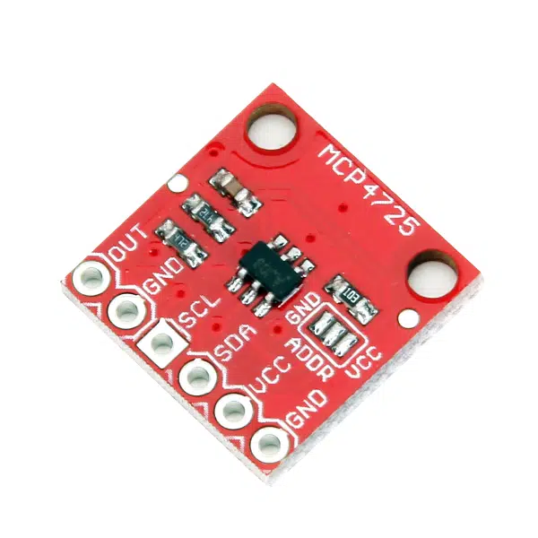

Vaga-lume entra para a lista de insetos em extinção; diz estudo
Vaga-lume entra para a lista de insetos em extinção; diz estudo
Gerador Onda Senoidal
Projeto: gerar uma onda senoidal de 440 Hz1 usando Arduino e circuitos auxiliares.
Material
Este projeto usa um módulo externo MCP47252 com o conversor D/A que se comunica com o Arduíno via I2C.
Módulo MCP4725 usado:

Métodologia
Este conversor D/A é de 12 bits, o que significa que trabalha com valores de entrada variando de 0 até :
xxxxxxxxxx>> 2^12ans = 4096>> ans/2ans = 2048Isto significa que a onda senoidal será gerada usando uma equação como:
O que gera um sinal variando entre .
Se vamos gerar 20 pontos por ciclo na senóide teremos algo como:
xxxxxxxxxx>> f=440; % freq. desejada>> fs=20*440 % freq. de amostragem = 20 * freq. desejadafs = 8800>> T=1/fs % período de amostragem necessárioT = 0.00011364>> % Simulando um gráfico>> t=0:T:2/440; % gera vetor tempo t>> y=2047+2047*sin(2*pi*440*t);>> plot(t,y,'bo-')E temos o seguinte grãfico antecipando a sequência de pontos que deve ser gerada pelo Arduíno:

Podemos implementar o gerador desta onda, variando o ângulo da senoide à cada nova amostra, já que aplicar literalmente a equação para , implica em problemas para gerar o valor de . Não parece muito prático avançar o valor de à cada instante de amostragem. O mais prático é avançar o ângulo da senoide e lembrar que nosso sinal é cíclico (uma senóide), variando entre 0 à . É muito mais fácil (e melhor) em termos computacionais, calcular o incremento angular correspondente ao ou adotado entre cada ponto do sinal gerado. Só não esquecer que a maior parte das linguagens de programação não trabalha com argumento de entrada em graus e sim em radianos. Completando alguns cáclulos, obtemos:
xxxxxxxxxx>> 360/20 % incremento angular entre os pontos na onda senoidal (em graus)ans = 18>> 2*pi/20 % incremento angular entre os pontos na onda senoidal (em radianos)ans = 0.31416Isto implica em gerar um código para gerar a senoide do tipo:
xxxxxxxxxx// Em algum bloco de inicialização de variáveis globais!const float delta_th = 2.0 * PI / 20.0; // incremento angular entre os 20 pontos da senoideint index = 0; // ponto da senoide sendo sintetizado// Rotina gera pontos onda senoidalvoid senoide(void){ float y; theta = index * delta_th; // calcula angulo atual da senoide y = 2047.0 + 2047.0*sin(theta); DAC_output((int)y); // envia valor inteiro entre 0 à 4095 ao DAC index++; // deixa pronto para proximo ponto if (index > 19) index = 0;}Note que temos que transformar o valor y float, num valor int usando operador de casting. Variáveis int no Arduíno ocupam 16-bits e são capazes de representar valores entre -32,768 () à 32,767 ()3. Então neste caso, percebemos que estamos gerando valores dentro da faixa esperada.
Usando lookup table
Outra forma comum de sintetizar sinais periódicos é fazer uso de uma "tabela de conversão" (ou lookup table).
Neste caso, passamos para a placa um vetor contendo os valores que devem ser gerados em cada instante de amostragem da onda. E repassamos este valor simplesmente apontando para o ponto correto na tabela. Este método é mais rápido que o anterior, pois não implica que a placa tenha que calcular por software o resultado da função sin() à cada instante de amostragem. Cabe lembrar que o C ATMEL 328/168 das placas Arduino One segue arquitetura RISC (Instruções simples) e que sua ULA não é de ponto flutuante. Portanto o cálculo da função sin() é feito por software e não hardware, atrasando a execução do código nesta parte.
Neste caso, o valor dos pontos que devem ser gerados em cada instante de amostagem deve ser pré-informado num vetor durante a codificação do gerador.
Mas é fácil definir este vetor. Já praticamente montamos este vetor quando simulamos a onda quadrada á ser gerada pelo Arduinoi usando o Matlab. Basta "exportar" este vetor, contendo apenas os valores inteiros sem sinal de 12-bits:
xxxxxxxxxx>> f=440;>> T=1/f;>> delta_t=T/20; % 20 amostras por ciclo>> t = 0: delta_t : T - delta_t; % vetor t contendo um ciclo exato da senoide>> y=2047+2047*sin(2*pi*440*t);>> [t' y']ans = 0 2047 0.00011364 2679.6 0.00022727 3250.2 0.00034091 3703.1 0.00045455 3993.8 0.00056818 4094 0.00068182 3993.8 0.00079545 3703.1 0.00090909 3250.2 0.0010227 2679.6 0.0011364 2047 0.00125 1414.4 0.0013636 843.8 0.0014773 390.94 0.0015909 100.19 0.0017045 0 0.0018182 100.19 0.0019318 390.94 0.0020455 843.8 0.0021591 1414.4>> % Percebemos que a variável y é do tipo "float", alternado para "int":>> y_seno = round(y);>> [t' y' y_seno']ans = 0 2047 2047 0.00011364 2679.6 2680 0.00022727 3250.2 3250 0.00034091 3703.1 3703 0.00045455 3993.8 3994 0.00056818 4094 4094 0.00068182 3993.8 3994 0.00079545 3703.1 3703 0.00090909 3250.2 3250 0.0010227 2679.6 2680 0.0011364 2047 2047 0.00125 1414.4 1414 0.0013636 843.8 844 0.0014773 390.94 391 0.0015909 100.19 100 0.0017045 0 0 0.0018182 100.19 100 0.0019318 390.94 391 0.0020455 843.8 844 0.0021591 1414.4 1414>> % é a última "coluna" da "tabela" anterior que temos que repassar para>> % um programa em CNote que se pode inicializar um vetor na linguagem C, realizando algo do tipo:
xxxxxxxxxxconst Valores uint16_t DACLookup[32] ={ 2048, 2447, 2831, 3185, 3495, 3750, 3939, 4056, 4095, 4056, 3939, 3750, 3495, 3185, 2831, 2447, 2048, 1648, 1264, 910, 600, 345, 156, 39, 0, 39, 156, 345, 600, 910, 1264, 1648};No exemplo anterior criamos um vetor de 32 elementos () de valores inteiros sem sinal de 16-bits (uint16_t).
Para o nosso caso, podemos fazer o Matlab apresentar o vetor num formato prático para "copy-&-paste" para a IDE do Arduino:
xxxxxxxxxx>> fprintf('%4d, ', y_seno); fprintf('\n')2047, 2680, 3250, 3703, 3994, 4094, 3994, 3703, 3250, 2680, 2047, 1414, 844, 391, 100, 0, 100, 391, 844, 1414, >> O bloco de código em C necessário para nossa senóide fica então como:
xxxxxxxxxx// a variável abaixo deve ser global!const Valores uint16_t DACLookup[20] =// 1 2 3 4 5 6 7 8 9 10{ 2047, 2680, 3250, 3703, 3994, 4094, 3994, 3703, 3250, 2680, 2047, 1414, 844, 391, 100, 0, 100, 391, 844, 1414 }Para acessar então determinado valor (ou posição) de senóide basta codificar algo como:
xxxxxxxxxx{ uint16_t k; // ponto da senoide (entre 0 à 19) uint16 valor; // valor desejado para ponto k da senoide for (k = 0; k < 19; k++) { valor = &(DACLookup[k]); }}Lembrando que estamos acessando o conteúdo do vetor tratando o mesmo como um ponteiro (qualquer vetor ou matriz em C é um ponteiro para uma região de memória). O operador & permite então recuperar o valor da posiçao k do vetor (ou ponteiro).
Definindo detalhes para a rotina ISR
Já sabemos como vamos implementar a senóide, o que nos falta agora é definir e programar a interrupção que vai disparar a rotina da onda senoidal à cada instante de amostragem.
O Arduino One e seu microcontrolador possui 3 temporizadores: timer0, timer1 e timer2, todos de 8-bits, com excessão do timer1 que é de 16-bits[^ISR_Arduino]. Além disto, cada um deles dispõe de registradores de prescaler para dividir a frequência de clock original da placa Arduino (16 MHz). Mas o C ATMEL 328/168 da placas Arduino One permite definir o prescaler apenas no valores fixos: 1, 8, 64, 256 e 1024. Realizando alguns cálculos para avaliar a forma que melhor nos convêm para uso do prescaler e programação do registrador com valor do timer, temos:
xxxxxxxxxx>> fs % Lembrando da freq. de amostragem desejadafs = 8800>> prescaler=[1 8 64 256 1024]; % valores padrões do Arduino>> CM=(16E6./(prescaler.*fs)-1); % registrador do Clock Select>> [prescaler' CM'] % mostrando resultados obtidosans = 1 1817.2 8 226.27 64 27.409 256 6.1023 1024 0.77557A idéia é trabalhar com o valor mais próximo de um "int" para a variável CM que define o valor a ser carregado no temporizador.
A combinação que parece resultar num menor erro na freq. de amostragem é prescaler = 256 e CM = 6, o que porém esulta num (freq. de amostragem) de 10,410 KHz (desejamos 8,8 KHz), um erro de 18,29% -- ver cálculos abaixo:
xxxxxxxxxx>> int16(CM) % convertendo float CM para int 16-bits no Matlabans = 1×5 int16 row vector 1817 226 27 6 1>> CM_usavel = [1817 226 27 6 1];>> fs_efetivo = (16E6./(prescaler.*CM_usavel+1))fs_efetivo = 8800.9 8844.7 9253.9 10410 15610>> erro_per=((fs-fs_efetivo)/fs)*100;>> [prescaler' CM' CM_usavel' fs_efetivo' erro_per'] % mostrando resultados obtidosans = 1 1817.2 1817 8800.9 -0.010001 8 226.27 226 8844.7 -0.50756 64 27.409 27 9253.9 -5.158 256 6.1023 6 10410 -18.294 1024 0.77557 1 15610 -77.384>> Agora percebemos que apenas as 2 primeiras combinações para prescaler e CM_usavel levam a menorer erros.
O detalhe é que primeira combinação, requer carregar o registrador CM (Compare Match Register) com um valor que não cabe dentro da faixa unsigned int de 8-bits (de 0 até ). Ou seja, neste caso, se fixarmos prescaler =1 seremos obrigados a trabalhar com o timer1 que é o único de 16-bits. Este temporizador é o mesmo que a interface IDE do Arduino usa para gerar varia o duty-cycle no gerador PWM quando se usa a instrução analogWrite() (que diferentemente do que seu nome indica, não gera realmente nenhum sinal analógico porque a placa Arduino One nem possui D/A).
Opção final: Como neste caso, não vamor usar o gerador PWM default do Arduino, podemos "sacrificar" o timer1 para nossa ISR trabalhando com o mesmo.
O gerador PWM *deafult do Arduino trabalha com baixas frequências: 980 Hz nos pinos 5 e 6 e 490 Hz nos pinos 3, 9, 10, 11.
Suponha que eventualmente nos interessaria redefinir a rotina PWM do Arquino para que mesma trabalhase na frequência (não audível) de 44 KHz.
Neste caso, considerando que o clock do Arduino é de 16 MHz, e é um processador RISC, que leva em média 4 ciclos de clock para finalizar uma instrução, isto resulta numa frequência de execução de código de 4 MHz, um valor pouco maior que a frequência de 44 KHz.
Realizando cálculos similares aos anteriores obteríamos:
xxxxxxxxxx>> [prescaler' CM' CM_usavel' fs_efetivo' erro_per'] % mostrando resultados obtidosans =1 362.64 363 43956 0.09998 44.455 44 45326 -3.013164 4.6818 5 49844 -13.282256 0.42045 0 1.6e+07 -362641024 -0.64489 -1 -15640 135.55Aqui também se chega a conclusão que seria melhor trabalhar com as 2 primeiras combinações se for desejado uma maior frequência num gerador PWM (trabalhando em 44 KHz).
Instalando a biblioteca (software) para trabalhar com DAC MCP4725
Temos que revisar agora a forma como o módulo A/D MCP4725 se comunica com o Arduino usando I2C.
Revisando páginas exemplo na internet usando este módulo perbemos que o mesmo foi originalmente disponibilizado pela empresa Adafruit: MCP4725 Breakout Board - 12-Bit DAC with I2C Interface. Esta mesma empresa disponibilizou uma biblioteca (em código C) para trabalhar com este módulo: GitHub Public: Adafruit_MCP4725.
Para instalar esta biblioteca::
Acesse a página no GitHub Public: Adafruit_MCP4725, clique no botão [DOWNLOADS] no canto superior direito, renomeie a pasta descompactada para Adafruit_MCP4725. Verifique se a pasta Adafruit_MCP4725 contém os arquivos Adafruit_MCP4725.cpp (arquivo que codifica os métodos da classe
Adafruit_MCP4725) e Adafruit_MCP4725.h (arquivo que inclui as definições de métodos da classeAdafruit_MCP4725).Esta biblioteca também pode ser baixada à partir do site do Arduino aqui: arquivo Adafruit_MCP4725-2.0.0.zip. Este arquivo compactado é uma cópia do mesmo conteúdo que seria baixado acessando diretamente GitHub Public: Adafruit_MCP4725.
Coloque a pasta da biblioteca Adafruit_MCP4725 na sua pasta arduinosketchfolder/libraries/, ou:
Para acrescentar componentes à biblioteca do Arduíno pode ser usando o Gerenciador da Biblioteca (Library Manager) do mesmo. É possível instalar a biblioteca diretamente à partir do arquivo
.zip. Basta na IDE do Arduino, navegar na barra do menur até "Sketch > Incluir Biblioteca > Adicionar Biblioteca .ZIP" (Sketch > Include Library > Add .ZIP Library):

Obs.: esta biblioteca requer a biblioteca <Wire.h> do Arduino para poder trabalhar com I2C.
Usando a Biblioteca <Adafruit_MCP4725.h>
Resumidamente temos que montar um código contendo algo como:
xxxxxxxxxx// Antes do bloco setup() ou loop() do Arduino:// necessário para comunicação I2C// Na parte do programa onde estamos declarando variáveis globais temos// que instanciar o objeto Adafruit_MCP4725() para poder acessar este// móduloAdafruit_MCP4725 dac; // para instanciar o objeto "dac" pertencente a classe "Adafruit_MCP4725"void loop(void) { // Para o Adafruit MCP4725A1 om endereço no barramento I2C é 0x62 (default) ou 0x63 (ADDR pin conectado à VCC) // Para o MCP4725A0 o endereço é 0x60 ou 0x61 // Para o MCP4725A2 o endereço é 0x64 ou 0x65 dac.begin(0x62); // para inicializar o DAC // atenção: este método retorna uma variável boolena (bool) true se o módulo foi encontrado, caso contrário retorna false // outros comandos}void loop(void) { uint16_t valor; // variável int sem sinal de 16-bits // comandos dac.setVoltage(valor, false); // modo mais fácil de acessar o módulo, mas outros parâmetros podem ser acessados}Descrição do método setVoltage() na classe `Adafruit_MCP4725``
A declaração deste método está no arquivo Adafruit_MCP4725.cpp, que traz:
xxxxxxxxxxbool Adafruit_MCP4725::setVoltage(uint16_t output, bool writeEEPROM, uint32_t i2c_frequency) {...}onde:
- o primeiro parâmetro, chamado:
output, corresponde ao valor inteiro sem sinal de 12-bits que o DAC deve converter; - o segundo parâmetro, chamado:
writeEEPROM, indica se o módulo deve reter na sua memória EPROM (não volátil) o valor repassado, mesmo depois de o módulo ser desligado ou resetado. - o terceiro parâmetro, chamado:
i2c_frequency, permite alterar a freq. de comunicação I2C usada com o módulo. O padrão é 400 KHz. - este método retorna uma variável boolena (bool) verdadeira (true) caso tenha sido possíivel repassar (escrever) valores no módulo I2C.
Montagem
Digrama elétrico para ligação de alto-faltante amplificado no Arduíno:

🚧 Obs.: página em construção
Referências:
[^ISR_Arduino] Arduino & Interrupções.
Outras referências
🎵 Fernando Passold, em 10/11/2023